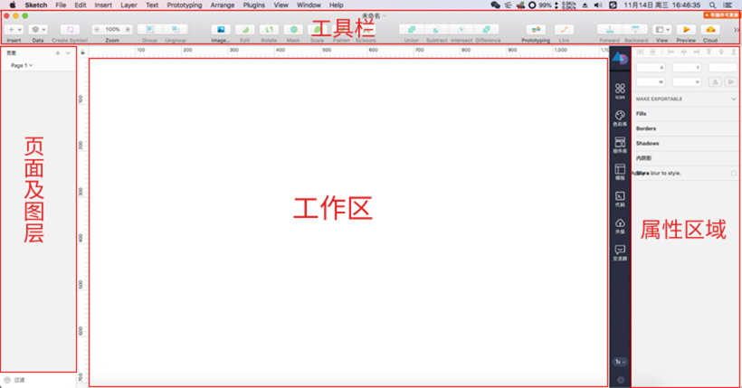
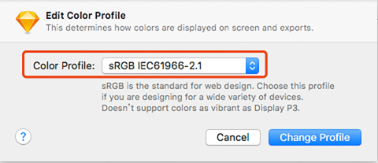
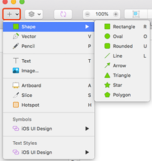
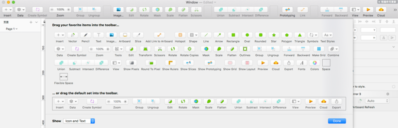

阿狸：这年头要是谁没用过sketch都不好意思说自己是个设计师。罒ω罒。如果你还不知道sketch是什么的话，现在还不晚，赶紧跟着我一起从头来了解它吧。相信你一定会爱上它的！
（干货来了，前排小板凳准备好！）
Sketch是一款矢量绘图应用，而矢量绘图无疑是目前进行网页、图标以及界面设计的最好方式。因而能更快的让UI设计更简单，更高效。PS的强大在于功能齐全，但很难完全掌握；而sketch则功能简单，很容易就能上手。还有就是它能自动进行存储，不再需要Ctrl+S，是不是很方便呀。再也不用担心死机了。 下面附一张sketch的界面图：
如果发现显示的色彩有问题的话，就用cmd+shift+K调取颜色描述文件，选择下图所示选项即可
鼠标右键点击工具栏空白处，可调出sketch提供的所有工具，进行自定义工具：拖拽添加、删除工具，可以选择下方默认的工具拖拽替换即可，也可以选择自己喜欢的拖拽到工具栏处，设置适合自己的工具栏。
工具栏最左边的+号按钮，形状快捷键：画板：A; 直线：L；矩形：R；椭圆：O；圆角矩形：U。这里有设计需要的所有工具，现在就开始绘制吧！
问题：现在有一张直角照片，怎么把直角变成圆角呢？答案很简单，只需绘制一个圆角矩形+一张照片即可
敲重点：形状图层必须位于图片的下层，然后选中这两个图层，单击工具栏的蒙版即可或者使用快捷方式

七天从小白变大神几乎不可能，但成为一名合格的设计师还是有可能的
七天从小白变大神几乎不可能，但成为一名合格的设计师还是有可能的
七天从小白变大神几乎不可能，但成为一名合格的设计师还是有可能的
七天从小白变大神几乎不可能，但成为一名合格的设计师还是有可能的
七天从小白变大神几乎不可能，但成为一名合格的设计师还是有可能的
七天从小白变大神几乎不可能，但成为一名合格的设计师还是有可能的